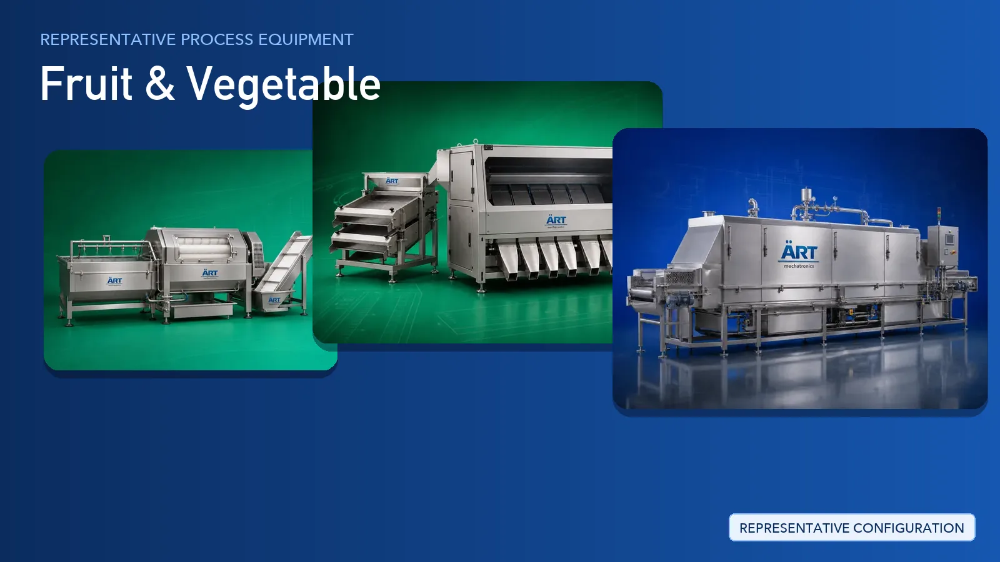

Fruit & Vegetable Processing Plant & Machinery Solutions (Dried, Frozen, Powder, Paste & Puree)
Fruit and vegetable processing covers a wide range of raw materials — fruits, vegetables, green peas and herbs — converted into dried, fresh-cut, frozen, powdered, paste and puree formats.

About Fruit & Vegetable processing
ART Mechatronics provides complete turnkey solutions for fruit and vegetable processing plants, offering systems for washing, sorting, peeling, cutting, blanching, drying, freezing, pulping and packaging. Our solutions are designed for hygienic food-grade operation, minimal product loss and consistent, export-ready output.
Complete Fruit & Vegetable Process Flow
Harvested produce is received, tipped and fed onto the line while loose soil, leaves and field trash are removed.
Ensures an even and controlled feed to the washing stage.
Produce is washed to remove soil, surface residues and contaminants, then inspected, sorted and graded.
Delivers:
- Hygienic, contaminant-free produce
- Removal of damaged and off-colour material
- Uniform grades for downstream processing
Graded produce is peeled, de-stemmed or de-seeded as required and cut to the shape needed for the finished format.
Produces:
- Slices, dices, cubes and strips
- Uniform piece size
- Ready-to-process material
Cut produce is blanched and then cooled before drying or freezing.
Helps retain colour, texture and natural flavour.
Depending on the finished format, the product is either dried under controlled conditions or frozen and moved into cold storage.
Supports:
- Dried and dehydrated fruit and vegetables
- Individually frozen pieces
- Stable shelf life
For liquid and powder formats, prepared produce is crushed and refined into pulp, puree or paste, or milled into powder after drying.
Gives:
- Smooth pulp and puree
- Concentrated paste
- Free-flowing dried powder
Finished product is weighed and packed into pouches, trays, cartons or bulk formats, with inline checks before dispatch.
Suitable for retail, foodservice and bulk export packs.
Machinery Required for Fruit & Vegetable Plant
Turnkey Fruit & Vegetable Plant Solutions
ART Mechatronics offers complete turnkey solutions for fruit and vegetable processing plants, including:
- Process design & plant layout
- Washing, sorting and grading lines
- Peeling, cutting and size-reduction systems
- Blanching, drying and freezing systems
- Pulping, paste and powder preparation systems
- Automation & control panels
- Packaging line integration
- Installation & commissioning
- After-sales support
We customize solutions based on:
- Produce type (fruits, vegetables, green peas or herbs)
- Finished format (dried, fresh, frozen, powder, paste or puree)
- Production capacity
- Packaging format
Why Choose ART Mechatronics for Fruit & Vegetable
- Turnkey expertise across dried, frozen, pulp and powder lines
- Gentle handling that protects delicate produce
- Integrated washing, sorting, drying and freezing systems
- Hygienic food-grade machinery design
- Reduced product loss through accurate sorting and grading
- Global export and after-sales support capability
Machinery in a Fruit & Vegetable plant
Where it's used
Get pricing & specs for the Fruit & Vegetable plant
Share the product, target capacity, current process and plant location. These details help our engineers discuss the right machine or line configuration.
One partner, from design to start-up
ART Mechatronics designs, manufactures, installs and commissions your Fruit & Vegetable plant solution with regional presence in India, UAE and Thailand.